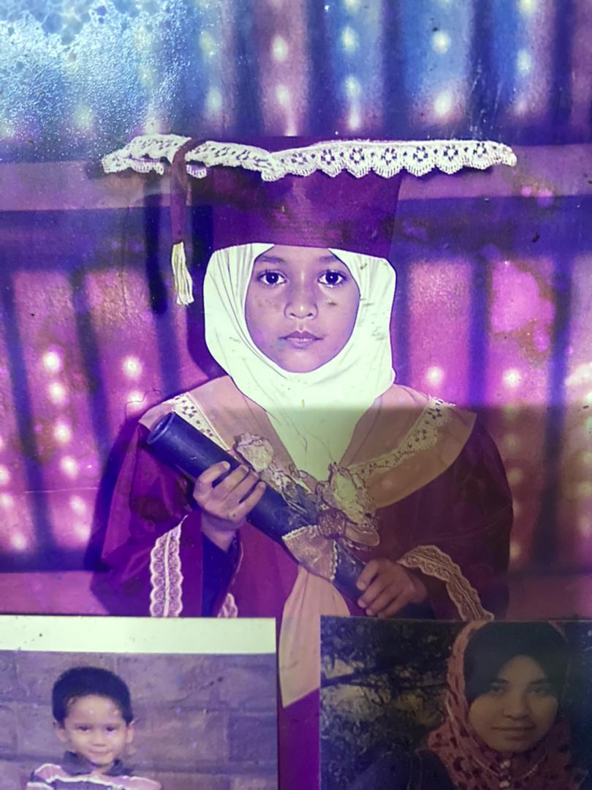
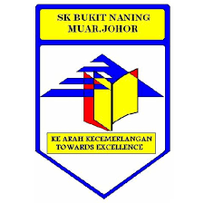
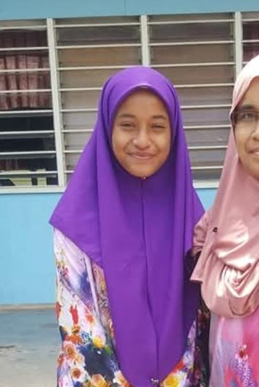
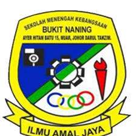
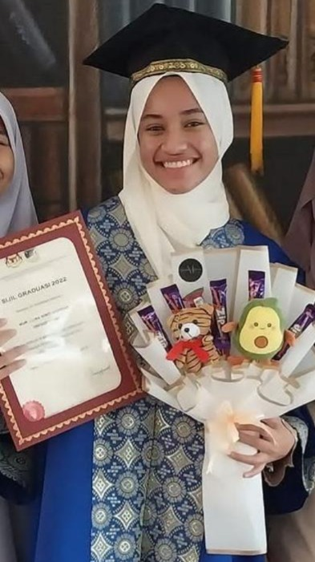
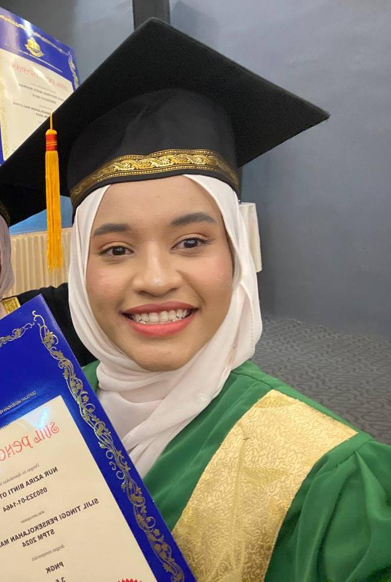
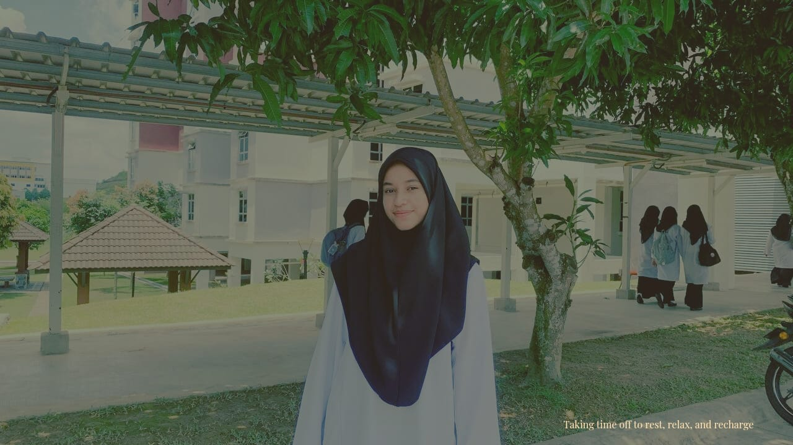

My Educational Journey
Determination is a passionate and within continuous pursuit of belief in continuous growth and learning. A deep interest in information management, creativity, and design has guided me throughout the journey.
Kindergarten
School: Tadika Agama Johor TAJ (2010-2011)
Role/Position: Class Monitor
Awards: Best Academic Performance


Primary School
School: SK Bukit Naning, Muar, Johor (2012-2017)
Role/Position: School Superintendent
Awards: Excellent Academic Performance Award


Secondary School
School: SMK Bukit Naning (2018-2022)
Role/Position: Library Prefect
Awards: SPM Excellent Candidate

Pre-University (STPM)
School: SMK Tun Dr. Ismail (2023-2025)
Role/Position: Academic Bureau
Awards: Anugerah Pelajar Cemerlang STPM 2025

Bachelor's Degree
University: Universiti Teknologi MARA (UiTM) Kampus Rembau (2025-Present)
Course: Bachelor of Information Science (Hons.)
Status: Active Student, AJK Ptar Buddies Club, Dean's List Part 1
